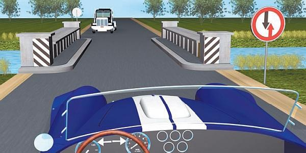
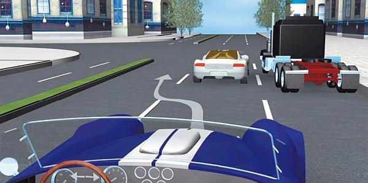
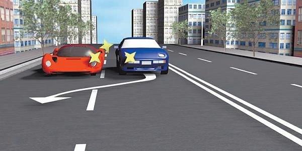
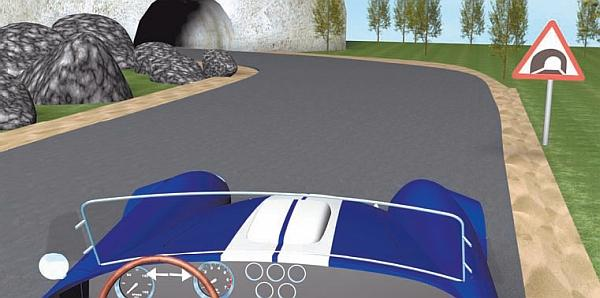
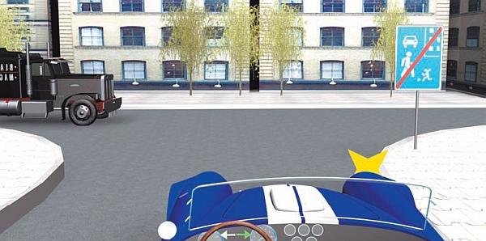

Искусство предвидения опасностей.
Для любого водителя исключительно важным является умение прогнозирования вероятных изменений ситуации на дороге, в которой он находится в данный момент. Освоившие технику предвидения опасностей намного реже становятся участниками дорожно-транспортных происшествий и почти никогда не оказываются их виновниками.
В целом процесс предвидения опасностей можно представить в виде ответов на перечисленные ниже вопросы.
Что может случиться на дороге в ближайшее время? Например, если вы видите, что водитель впереди идущего транспортного средства ведет себя непредсказуемо – это явно сигнализирует о возможной опасности. То же самое касается ситуации, когда неподалеку от проезжей части играют дети: нередки случаи, когда ребенок неожиданно выскакивает на дорогу за, например, укатившимся мячом.
Вероятность какого развития событий наиболее велика? Например, если водитель движущегося перед вами транспортного средства часто и без видимых причин снижает скорость, существует опасность столкновения, причем виноват будет водитель автомобиля, движущегося позади. Очевидно, что в данном случае целесообразно увеличить дистанцию.
Представляют ли текущее развитие событий и дорожная обстановка какую-либо опасность? Например, вы видите, что водитель движущегося позади вас транспортного средства ведет себя неадекватно (часто и беспричинно виляет из стороны в сторону и т. п.), – вряд ли это представляет для вас опасность, пока он находится сзади. Но при появлении встречных транспортных средств ситуация резко меняется, так как если он неожиданно выедет на полосу встречного движения, то водитель движущегося по ней автомобиля от неожиданности может свернуть прямо вам навстречу (это может произойти инстинктивно).
Насколько опасна текущая дорожная ситуация в целом? Например, на широкой дороге автомобилей немного, пешеходов и велосипедистов нет, то есть можно сказать, что особых опасностей пока нет, но появление в непосредственной близости от проезжей части детей – один из первых признаков возможной опасности.
Кстати, все виды опасностей подразделяются на две категории: непосредственные и потенциальные.
Непосредственной опасностью считается такая опасность, которая не вызывает сомнений и требует от водителя немедленного реагирования. Примерами могут являться неожиданно выехавший на вашу полосу встречный автомобиль, внезапно выбежавший на проезжую часть пешеход, начавший перестроение в вашу полосу находящийся рядом автомобиль, для которого вы находитесь в «мертвой зоне», резкое торможение движущегося впереди транспортного средства и т. д. Именно непосредственная опасность является причиной большинства дорожно-транспортных происшествий.
Что касается потенциальной опасности, то она является как бы начальным этапом непосредственной опасности. Говоря иными словами, непосредственная опасность возникает из потенциальной (рис. 6.13).

Рис. 6.13. Эта ситуация потенциально опасна: автомобили должны строго соблюдать очередность проезда
Если неподалеку от проезжей части играют дети, то водитель должен быть готов к тому, что ребенок внезапно выбежит на проезжую часть. Играющие возле дороги дети – это потенциальная опасность, а выбежавший на дорогу ребенок – непосредственная, требующая немедленного, четкого и безошибочного реагирования.
Далее мы рассмотрим несколько типичных дорожно-транспортных ситуаций, при которых могут возникать опасности.
Кто-то из участников дорожного движения (транспортное средство или пешеход) пересекает траекторию вашего движения под прямым углом. В данном случае предвидеть опасность можно по следующим признакам: высокая скорость приближающегося транспортного средства, неисправность светофора, недостаточность обзора на пересекаемой проезжей части, нетрезвое состояние или неадекватное поведение пешехода. Как известно, пешеход может в любой момент выбежать на проезжую часть перед движущимся автомобилем. Характерным признаком такой опасности является наличие поблизости от проезжей части группы людей (каждый из них может неожиданно оказаться на дороге), а также припаркованных у обочины автомобилей. Последнее прежде всего касается крупногабаритных транспортных средств, поскольку из-за них в любой момент может выйти пешеход. По этой причине особую осторожность следует соблюдать возле остановок общественного транспорта, так как стоящий автобус или троллейбус загораживают водителю движущегося по соседней полосе транспортного средства обзор на тротуаре и он не может видеть намерений пешеходов.
Позади вашего автомобиля в непосредственной близости движется другое транспортное средство. Характерными признаками опасности в этом случае являются высокая скорость движения вашей машины, небольшое расстояние до движущегося позади транспортного средства, а также дорожно-транспортная ситуация, которая требует от вас значительного и немедленного уменьшения скорости движения (рис. 6.14). При резком торможении высока вероятность того, что водитель движущегося за вами транспортного средства не успеет своевременно отреагировать и ударит вашу машину сзади. Конечно, виновным в совершении данной аварии будет признан водитель автомобиля, ехавшего сзади.

Рис. 6.14. Слишком быстрое сближение перед обгоном может привести к аварии
В подобной ситуации следует заранее и постепенно снижать скорость, не дожидаясь опасной ситуации, требующей резкого торможения. Можно несколько раз несильно нажать на педаль тормоза, припугнув водителя заднего автомобиля и вынудив его таким образом увеличить дистанцию. При наличии свободной полосы движения имеет смысл перестроиться в нее, а если такой возможности нет, дайте обогнать себя.
Транспортное средство, движущееся перед вами, резко снижает скорость или останавливается, в результате чего стремительно сокращается дистанция между вашими автомобилями. Характерными признаками возможной опасности являются наличие впереди на дороге каких-либо препятствий, загоревшиеся стоп-сигналы переднего транспортного средства, наличие в непосредственной близости от проезжей части группы людей, приближение к перекрестку, наличие на проезжей части перед движущимся впереди автомобилем разворачивающихся или поворачивающих транспортных средств.
В подобной ситуации следует заблаговременно уменьшить скорость движения и увеличить дистанцию до движущегося впереди транспортного средства. Не стоит забывать, что при движении в сырую погоду или на скользкой дороге тормозной путь автомобилей существенно увеличивается, поэтому дистанцию нужно значительно увеличить.
Транспортное средство, движущееся по соседней полосе в попутном направлении в непосредственной близости от вас, начинает перестраиваться в ваш ряд, тем самым создавая помеху для вашего движения. Характерными признаками такой опасности являются включившийся указатель поворота у движущегося поблизости автомобиля, наличие впереди перекрестка (водители могут перестраиваться в соответствующие полосы движения для выполнения на перекрестке поворота), наличие стоящих у обочины автомобилей (они могут мешать перемещению движущихся по соседней с вами полосе транспортных средств, вынуждая их водителей перестраиваться влево). В подобной ситуации можно посигналить фарами или звуковым сигналом водителю, который собрался вас подрезать. Желательно снизить скорость движения, так как, во-первых, вы выйдете из «мертвой зоны» (если, конечно, там находитесь), а во-вторых, это позволит избежать дорожно-транспортного происшествия, если водитель другого автомобиля не отреагирует на подаваемые вами сигналы и не откажется от выполнения маневра (рис. 6.15).

Рис. 6.15. Много аварий случается при одновременном перестроении
ВНИМАНИЕ
В подобной ситуации никогда не пытайтесь обогнать транспортное средство, водитель которого намеревается перестроиться в вашу полосу движения, это может привести к попутному столкновению. Виновником такой аварии, как правило, признается водитель, который начал перестроение, не убедившись в отсутствии помех (в частности, транспортных средств, движущихся по соседней полосе в попутном направлении). Однако и на другого водителя может быть возложена часть вины – за то, что он не предпринял всех необходимых мер для предотвращения дорожно-транспортного происшествия.
Как правило, после подачи предупредительного сигнала водители временно отказываются от перестроения и дожидаются более удобного момента.
Транспортное средство, движущееся во встречном направлении, неожиданно выезжает на вашу полосу движения. Данная опасность может проявляться по-разному: например, встречный автомобиль может оказаться на вашей полосе движения, выполняя левый поворот или разворот, либо совершая обгон с выездом на полосу встречного движения, либо его выносит на вашу полосу при преодолении крутого поворота. Характерными признаками таких опасностей являются небольшая ширина проезжей части, высокая скорость движения встречного транспортного средства, наличие крутого поворота или скользкого участка дороги, наличие стоящих у обочины либо движущихся с медленной скоростью встречных транспортных средств (другие водители будут их объезжать или обгонять), включение у встречного транспортного средства указателя левого поворота или перестроение его в левый ряд, наличие впереди места для разворота или перекрестка.
В подобной ситуации следует внимательно наблюдать за дорожно-транспортной ситуацией, стараясь контролировать ее на максимально большом расстоянии. Приближаясь к перекрестку, заблаговременно уменьшите скорость, даже если вам горит разрешающий сигнал светофора, ведь в любой момент на вашей полосе может оказаться тот, кто выполняет поворот налево, или просто нарушитель.
Если встречный автомобиль движется по вашей полосе прямо вам навстречу и не предпринимает никаких мер по предотвращению дорожно-транспортного происшествия, вам придется действовать, как говорится, «и за себя, и за того парня». Не исключено, что человеку просто стало плохо за рулем и его автомобиль стал неуправляемым. В таком случае действуйте следующим образом.
> В первую очередь уменьшите скорость движения своего автомобиля. Это увеличит расстояние до встречного транспортного средства и позволит выиграть место для маневра (может быть, этого места хватит водителю встречной машины для возврата на свою полосу движения). При этом сигнализируйте ему морганием фар и звуковым сигналом.
> Если водитель встречного транспортного средства не реагирует на ваши предупредительные сигналы и продолжает ехать вам «в лоб», постарайтесь найти место для съезда с этой дороги. Это может быть пересекаемая дорога, поворот во двор, на проселочную или лесную дорогу, въезд на автостоянку или автозаправочную станцию.
> Если вы видите, что столкновение неизбежно, предпримите все меры для того, чтобы оно не было лобовым, так как в результате таких столкновений люди часто гибнут или получают увечья. Постарайтесь направить свою машину по касательной: боковые или скользящие столкновения в большинстве случаев не влекут за собой тяжких последствий. Ни в коем случае не пытайтесь выпрыгнуть из автомобиля во время движения: вы можете попасть под колеса собственной машины, попутного автомобиля, который следует за вами, либо встречного транспортного средства.
В процессе движения наблюдайте не только за своей стороной дороги, но и за противоположной, ведь происходящие на другой стороне события могут самым непосред ственным образом повлиять на безопасность вашего движения. Например, слева от дороги стоит группа людей или играют дети и кто-то из них в любой момент может выбежать на проезжую часть, что вынудит водителя встречного автомобиля предпринять действия для предотвращения наезда на пешехода. Очень часто в подобных ситуациях водители инстинктивно поворачивают руль влево, оказываясь на полосе встречного движения.
Еще один пример – это стоящие у противоположной обочины транспортные средства. Если дорога имеет по одной полосе для движения в каждом направлении, то водители встречных автомобилей будут вынуждены их объезжать и очень вероятно, что для этого им придется полностью или частично выезжать на полосу встречного движения.
Всегда необходимо быть максимально внимательными при прохождении крутых поворотов, особенно если это происходит на дороге со скользким дорожным покрытием (дождь, гололед), а также тоннелей (рис. 6.16). Во-первых, при движении на высокой скорости ваш автомобиль может вынести на полосу встречного движения, что может привести к серьезному дорожно-транспортному происшествию, во-вторых, даже если вы предпримете все меры безопасности, необходимо все время быть готовым к тому, что вынести на встречную полосу может любое встречное транспортное средство. Обращайте внимание на скорость встречных автомобилей: если она достаточно высока и перед крутым поворотом водитель ее не снижает, вам следует уменьшить скорость, взять как можно правее и быть начеку, возможно, вам придется предпринимать срочные меры для предотвращения аварии.

Рис. 6.16. Тоннель – зона повышенной опасности
Большое значение с точки зрения прогнозирования опасных дорожных ситуаций имеет умение водителя предугадывать возможные ошибки других участников дорожного движения. Иначе говоря, не нужно целиком полагаться на правильность их действий. Несмотря на то что водитель вправе рассчитывать на соблюдение Правил дорожного движения другими участниками движения (это положение закреплено в ПДД), всегда есть вероятность ошибки кого-то из них, причем любая такая ошибка может быть фатальной.
Например, вы видите, что водитель движущегося перед вами транспортного средства включил указатель правого поворота. Вы решаете его обогнать, но едва с ним поравнялись, как этот автомобиль начал смещаться… влево. Стоит ли говорить, что такой поворот событий является для вас полнейшей неожиданностью! А причина заключалась лишь в том, что водитель этого автомобиля перепутал указатели поворотов и вместо левого по ошибке включил правый. Казалось бы, какая мелочь – не в ту сторону повернул рычаг указателей поворота, но это может стать причиной серьезной аварии.
Виновником в совершении дорожно-транспортного происшествия будет однозначно признан водитель, который неправильно информировал других участников движения о своем намерении выполнить маневр. Поэтому, если вы увидели, что кто-то включил «поворотник», дождитесь момента, когда он начнет выполнять маневр, чтобы обезопасить себя от подобных малоприятных «сюрпризов».
ВНИМАНИЕ
Как правило, самые существенные дорожно-транспортные происшествия случаются при нарушении Правил дорожного движения на перекрестках, а также при выполнении обгонов.
Наиболее распространенными ошибками водителей (чаще всего их совершают новички) являются:
> выезд на встречную полосу при осуществлении правого поворота;
> потеря своей полосы при выполнении поворотов;
> перестроение без особой необходимости;
> движение на слишком малом расстоянии от следующего впереди транспортного средства;
> непродуманный, авантюрный и опасный обгон;
> слишком резкое снижение скорости при приближении к перекресткам;
> неожиданный выезд с прилегающих территорий (жилых зон, дворовых территорий) (рис. 6.17);

Рис. 6.17. Выезжая из жилой зоны, уступи дорогу
> неожиданное для других участников дорожного движения выполнение маневров (без предварительного включения соответствующего указателя поворота);
> недостоверное информирование других участников дорожного движения о своем намерении (ошибочное включение не того указателя поворота).
Старайтесь учитывать возможные ошибки других участников движения – и ваши шансы попасть в дорожно-транспортное происшествие заметно уменьшатся.